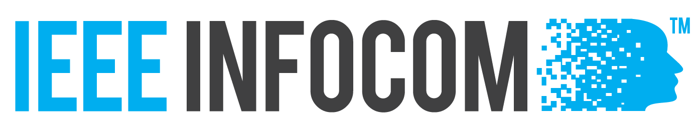
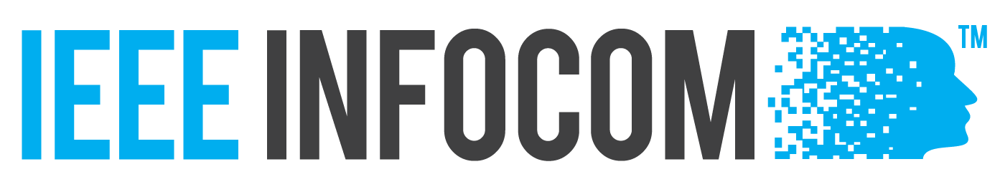
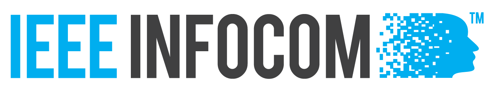

IEEE International Symposium on a World of Wireless, Mobile, and Multimedia Networks
(IEEE WOWMOM 2019)
9 June - 12 June, 2019 // Washington DC, USA

IEEE International Symposium on a World of Wireless, Mobile, and Multimedia Networks
(IEEE WOWMOM 2019)
9 June - 12 June, 2019 // Washington DC, USA
Topics of interest include, but are not limited to: TBA
| Paper submission deadline: | March 11, 2019 |
|---|---|
| Author Notification: | April 15, 2019 |
| Camera-ready submission: | April 29, 2019 |
| Workshop date: | TBA |